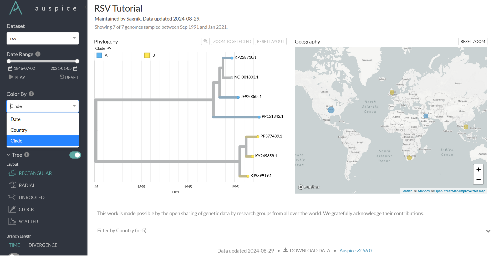

Nextstrain is a powerful bioinformatics tool designed for real-time tracking and analysis of pathogen evolution, with a particular focus on virology and infectious disease surveillance. It provides a platform for creating phylogenetic and phylogeographic analyses that are visually accessible, helping researchers monitor outbreaks, track pathogen mutations, and inform public health responses.
Nextstrain is composed of two main components:
This tutorial will guide you through using Nextstrain on a Linux system or Windows Subsystem for Linux (WSL). We will focus on creating a pathogen repository and conducting real-time analysis on Respiratory Syncytial Virus (RSV).
For more detailed information on Nextstrain, you can refer to their official documentation.
Before diving into the tutorial, ensure that you have the following installed on your system:
If these are already set up on your system, you can skip to the "Installing Nextstrain" section. Otherwise, follow the detailed guide below to complete the prerequisites.
Most users operate on a Windows system, where WSL can be utilized to run Linux-based bioinformatics tools. The most commonly used Linux distribution for this purpose is Ubuntu. The installation process requires a stable internet connection and approximately 4-5 GB of disk space.
Windows + R on your keyboard, type cmd, and press Enter.Enter:wsl --installwsl --list --onlinewsl --install -d DebianCongratulations! You now have a Linux operating system running on your Windows machine.
ubuntuexitConda is a package manager and environment management system. It allows you to create isolated environments for different projects, ensuring that dependencies do not interfere with one another.
Docker provides a containerized environment, allowing you to run applications with all their dependencies in a consistent environment across different systems.
Firstly, download conda installer from here.
After installation, run this command:
bash Anaconda[YOUR VERSION].sh ( $ bash Anaconda3-5.2.0-Linux-x86_64.sh ) Give your version in [YOUR VERSION].
conda --version to check if installation was successful.
curl -fsSL --proto '=https' https://nextstrain.org/cli/installer/linux | bash
Use this command to setup conda for Nextstrain.
nextstrain setup --set-default conda --force
I use the --force argument, but it is optional.
The output should be should look like after installation.
If you prefer to use docker, then proceed with the following steps.
curl -fsSL --proto '=https' https://nextstrain.org/cli/installer/linux | bashnextstrain setup --set-default dockerThe output should be should look like after installation.
Launch the Nextstrain shell using the command:
nextstrain shell .PP151342.1, JF920065.1, KJ939919.1, KP258710.1, KY249658.1, OR288010.1, PP377489.1.sequences.fasta.sequences.fasta in a text editor like Notepad or Vim.| character and replace it with a space ( ).While it is not mandatory to create a folder structure like this, it is so that we are on the same page. Create a folder named rsv_nextstrain and organize the following files within it:
metadata.tsvsequences.fastareference.fastaCreate three subfolders within rsv_nextstrain: config, auspice, and results. The config folder should contain the following three files:
auspice_config.jsoncolors.tsvlat_longs.tsv
The metadata.tsv file should look like this:
| strain | virus | date | country | clade_membership |
| PP151342.1 | rsv | Sep-21 | Kuwait | A |
| JF920065.1 | rsv | 09-Jan-98 | United States | A |
| KJ939919.1 | rsv | 30-Jul-09 | Vietnam | B |
| KP258710.1 | rsv | 1991 | United States | A |
| KY249658.1 | rsv | 30-Dec-13 | United Kingdom | B |
| OR288010.1 | rsv | 24-02-2019 | Zambia | A |
| PP377489.1 | rsv | 09-05-2019 | South Africa | B |
The auspice_config.json file should look like this:
Title:
"title": "RSV Tutorial"
This specifies the title of the visualization that will appear in Auspice. It helps identify the dataset you're working with.
Maintainers:
"maintainers": [{"name": "Sagnik"}]
This section lists the maintainers of the dataset. Instead of my name, put your name. You can also include multiple maintainers.
Colorings:
"colorings": [...]
This section defines how different attributes of the data will be colored in the visualization. Each object within this array corresponds to a specific attribute:
"key": "genotype": Specifies the attribute to be colored.
"title": "Genotype": Title for the coloring that will be displayed in the Auspice UI.
"type": "categorical": Type of data, which can be categorical (distinct categories like Genotype, Country) or continuous (like Date).
Geo Resolutions:
"geo_resolutions": ["country"]
Defines the geographical resolution for the map visualization. In this case, it focuses on the country level.
Panels:
"panels": ["tree", "map"]
Lists the types of visualizations (or "panels") that will be displayed. Here, a phylogenetic tree and a geographical map are included.
"filters": ["country"]
Defines which attributes can be used as filters in the Auspice interface. In this example, users can filter the data by country.
The lat_longs.tsv file should look like this:
| country | Kuwait | 29.31166 | 47.48177 |
| country | United States | 37.09024 | -95.7129 |
| country | Vietnam | 14.05832 | 108.2772 |
| country | United Kingdom | 55.37805 | -3.43597 |
| country | Zambia | -13.1339 | 27.84933 |
| country | South Africa | -30.5595 | 22.93751 |
You can get a csv coordinates file for all countries from this site. However, ensure that your csv file has country names which are same as your metadata file.
The colors.tsv file should look like this:
| country | Kuwait | #FF0000 |
| country | South Africa | #00FF00 |
| country | United Kingdom | #0000FF |
| country | United States | #FFFF00 |
| country | Vietnam | #00FFFF |
| country | Zambia | #FF00FF |
You might want to index your sequences first but it doesn't matter for this tutorial since we have very small data.
Enter the nextstrain shell typing nextstrain shell . in your ubuntu terminal. To filter the sequences with a size constraint, run the following command. RSV has a genome size of about 15.2 kb, so we can filter out the smaller sequences with the --min-length 15000 argument.
augur filter --metadata metadata.tsv --sequences sequences.fasta --min-length 15000 --output filtered_sequences.fasta
To test if any sequences have been excluded in the filtered_sequences.fasta file, use this command:
grep -o ">" filtered_sequences.fasta | wc -l
The output will be 6, meaning 1 sequence has been filtered out. You can open the FASTA file in any editor such as Notepad or software such as MEGA11 to find out which sequences were eliminated.
Next, we will move on to the alignment task. If you already have an aligned file, you can choose that. However, we will align with augur here. The only supported alignment method is mafft. Additionally, you can choose to have the reference omitted from the alignment.
Here's the command:
augur align --sequences filtered_sequences.fasta --reference-sequence reference.fasta --output results/aligned.fasta --fill-gaps
Sometimes, if you want to drop the reference sequence from the output, add the --remove-reference argument to the above command.
Note: If you have a lot of sequences and want to alter the performance, using the argument --nthreads will help. You can find how many cores your computer has using the nproc command in Linux.
We would like to make a phylogenetic tree. The defualt tool used is IQ-Tree. Use this command to make a raw tree first:
augur tree --alignment results/aligned.fasta --output results/tree_raw.nwk
Refine the tree using this command:
augur refine --tree results/tree_raw.nwk --alignment results/aligned.fasta --metadata metadata.tsv --output-tree results/tree.nwk --output-node-data results/branch_lengths.json --timetree --coalescent opt --date-confidence --date-inference marginal --clock-rate 0.00077 --stochastic-resolve
We have used the clock rate 0.00077 or 7.7 x 10^-4 subs/base/year.
Now, it is time to create the JSON file. Use this command:
augur export v2 --tree results/tree.nwk --metadata metadata.tsv --node-data results/branch_lengths.json --colors config/colors.tsv --lat-longs config/lat_longs.tsv --auspice-config config/auspice_config.json --output auspice/rsv.json
The final step is to visualize the data, done using the nextstrain view command followed by the name of the directory and file. It is usually:
nextstrain view auspice/
This command will visualize all the datasets within the directory.
Note: It is seen that you have to get out of the Nextstrain shell to use this command. However, in some cases, it works inside the Nextstrain shell. To open the link, you need to manually press Ctrl and click on http://127.0.0.1:4000/rsv.
This is how it should look like.
Colouring using clades instead of countries.
Also, since we did not mention the details for the reference sequence they are not visible here.
This tutorial provided a step-by-step guide to set up and run a real-time analysis of RSV using Nextstrain. You can now visualize your own data. Remember to refer to the official Nextstrain documentation for a more detailed understanding.
Let us know what you think
For any inquiries, feel free to contact me at pages@example.com.